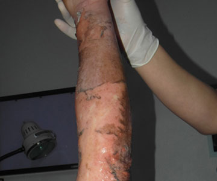
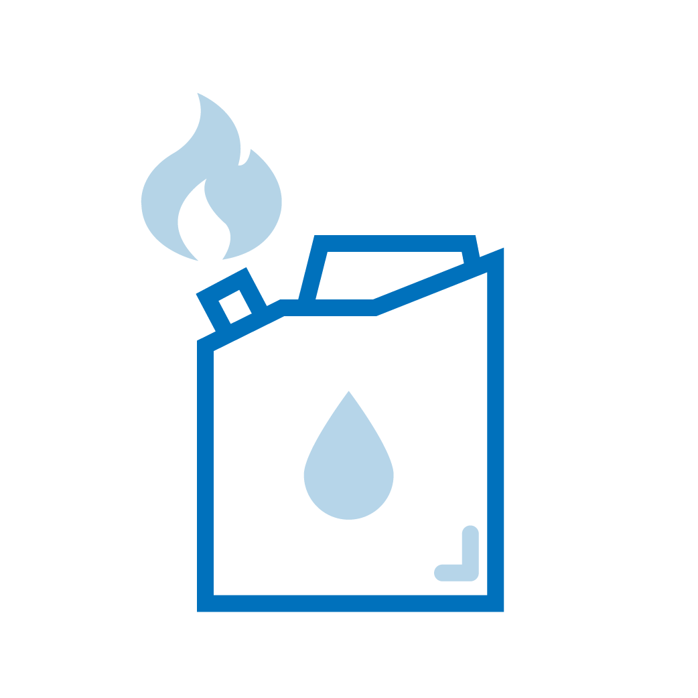
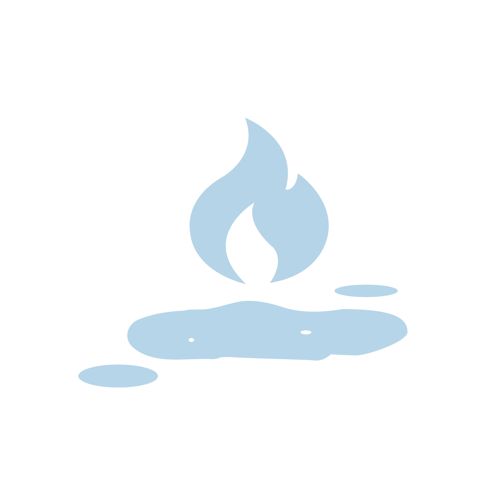

· 원인


· 특징
① 화재현장에서 빈번하며, 대부분 사고에 의하여 발생합니다.
② 화염의 크기에 따라 다양한 신체 범위에 화상을 유발하며, 다른 화상종류에 비하여 비교적 넓은 범위를 침범하는 경우가 많습니다.
③ 불꽃이 순식간에 스쳐 지나간 경우 얕은 정도의 화상으로 끝날 수 있으나, 화염에 비교적 장시간 노출되었거나, 옷에 불이 붙은 경우에는 깊은 화상 손상이 유발됩니다.
④ 화재 시 발생하는 연기에 의한 흡입화상이 동시에 발생 할 수 있습니다.